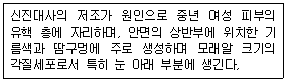
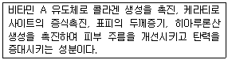
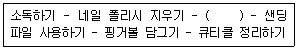

미용사(네일) (2016-07-10 기출문제)
1과목: 공중위생학
1. 다음 중 제2군 감염병이 아닌 것은?(관련 규정 개정전 문제로 여기서는 기존 정답인 2번을 누르면 정답 처리됩니다. 자세한 내용은 해설을 참고하세요.)
- 홍역
- 성홍열
- 폴리오
- 디프테리아
(정답률: 58%)

2. 다음 5대 영양소 중 신체의 생리기능조절에 주로 작용하는 것은?
- 단백질, 지방
- 비타민, 무기질
- 지방, 비타민
- 탄수화물, 무기질
(정답률: 67%)
3. 다음 중 감염병이 아닌 것은?
- 폴리오
- 풍진
- 성병
- 당뇨병
(정답률: 91%)
4. 다음 중 실내공기 오염의 지표로 널리 사용되는 것은?
- CO2
- CO
- Ne
- NO
(정답률: 90%)
5. 보건행정의 특성과 거리가 먼 것은?
- 공공성과 사회성
- 과학성과 기술성
- 조장성과 교육
- 독립성과 독창성
(정답률: 81%)
6. 출생 시 모체로부터 받는 면역은?
- 인공능동면역
- 인공수동면역
- 자연능동면역
- 자연수동면역
(정답률: 55%)
7. 오늘날 인류의 생존을 위협하는 대표적인 3요소는?
- 인구 - 환경오염 – 교통문제
- 인구 - 환경오염 - 인간관계
- 인구 - 환경오염 – 빈곤
- 인구 - 환경오염 - 전쟁
(정답률: 73%)
8. 다음 중 이학적(물리적) 소독법에 속하는 것은?
- 크레졸 소독
- 생석회 소독
- 열탕 소독
- 포르말린 소독
(정답률: 68%)
9. 다음 중 살균효과가 가장 높은 소독 방법은?
- 염소소독
- 일광소독
- 저온소독
- 고압증기멸균
(정답률: 82%)
10. 이·미용 작업 시 시술자의 손 소독 방법으로 가장 거리가 먼 것은?
- 흐르는 물에 비누로 깨끗이 씻는다.
- 락스액에 충분히 담갔다가 깨끗이 헹군다.
- 시술 전 70% 농도의 알코올을 적신 솜으로 깨끗이 씻는다.
- 세척액을 넣은 미온수와 솔을 이용하여 깨끗하게 닦는다.
(정답률: 85%)
11. 소독용 과산화수소(H2O2) 수용액의 적당한 농도는?
- 2.5 ~ 3.5%
- 3.5 ~ 5.0%
- 5.0 ~ 6.0%
- 6.5 ~ 7.5%
(정답률: 60%)
12. 세균의 단백질 변성과 응고작용에 의한 기전을 이용 하여 살균하고자 할 때 주로 이용하는 방법은?
- 가열
- 희석
- 냉각
- 여과
(정답률: 67%)
13. 이·미용실의 기구(가위, 레이저) 소독으로 가장 적합한 소독제는?
- 70~80%의 알코올
- 100~200배 희석 역성비누
- 5% 크레졸비누액
- 50%의 페놀액
(정답률: 83%)
14. 살균작용의 기전 중 산화에 의하지 않는 소독제는?
- 오존
- 알코올
- 과망간산칼륨
- 과산화수소
(정답률: 45%)
2과목: 피부학
15. 흡연이 인체에 미치는 영향에 대한 설명으로 적절하지 않은 것은?
- 간접흡연은 인체에 해롭지 않다.
- 흡연은 암을 유발할 수 있다.
- 흡연은 피부의 표피를 얇아지게 해서 피부의 잔주름 생성을 증가시킨다.
- 흡연은 비타민C를 파괴한다.
(정답률: 89%)
16. 피부 관리가 가능한 여드름의 단계로 가장 적절한 것은?
- 결정
- 구진
- 흰면포
- 농포
(정답률: 60%)
17. 다음 중 체모의 색상을 좌우하는 멜라닌이 가장 많이 함유되어 있는 곳은?
- 모표피
- 모피질
- 모수질
- 모유두
(정답률: 61%)
18. 다음에서 설명하는 피부병변은?

- 매상 혈관종
- 비립종
- 섬망성 혈관종
- 섬유종
(정답률: 79%)
19. 피부 상피세포조직의 성장과 유지 및 점막손상방지에 필수적인 비타민은?
- 비타민 A
- 비타민 B
- 비타민 E
- 비타민 K
(정답률: 53%)
20. 다한증과 관련한 설명으로 가장 거리가 먼 것은?
- 더위에 견디기 어렵다.
- 땀이 지나치게 많이 분비된다.
- 스트레스가 악화요인이 될 수 있다.
- 손바닥의 다한증은 악수 등의 일상생활에서 불편함을 초래한다.
(정답률: 73%)
21. 인체에 있어 피지선이 존재하지 않는 곳은?
- 이마
- 코
- 귀
- 손바닥
(정답률: 85%)
3과목: 공중위생법규
22. 이·미용업 영업자가 시설 및 설비기준을 위반한 경우 1차 위반에 대한 행정처분 기준은?
- 경고
- 개선명령
- 영업정지5일
- 영업정지 10일
(정답률: 62%)
23. 공중위생감시원의 업무에 해당하지 않는 것은?
- 공중위생영업 신고 시 시설 및 설비의 확인에 관한사항
- 공중위생영업자 준수사항 이행 여부의 확인에 관한사항
- 위생지도 및 개선명령 이행 여부의 확인에 관한사항
- 세금납부 걱정 여부의 확인에 관한사항
(정답률: 87%)
24. 법에 따라 이·미용업 영업소 안에 게시하여야 하는 게시물에 해당하지 않는 것은?
- 이·미용업 신고증
- 개설자의 면허증 원본
- 최종 지불 요금표
- 이·미용사 국가기술자격증
(정답률: 64%)
25. 과태료 처분에 불복이 있는 자는 그 처분의 고지를 받은 날부터 며칠 이내에 처분권자에게 이의를 제기할 수 있는가?
- 7일 이내
- 10일 이내
- 15일 이내
- 30일 이내
(정답률: 65%)
26. 이·미용업 위생교육에 관한 내용이 맞는 것은?
- 위생교육 대상자는 이·미용업 영업자이다.
- 이·미용사의 면허를 받은 사람은 모두 위생교육을 받아야한다.
- 위생교육은 시·군·구청장이 실시한다.
- 위생교육 시간은 매년 4시간으로 한다.
(정답률: 52%)
27. 이·미용사의 면허를 받을 수 없는 자는?
- 전문대학에서 이용 또는 미용에 관한 학과를 졸업한자
- 교육부장관이 인정하는 이·미용 고등학교에서 이용 또는 미용에 관한 학과를 졸업한자
- 교육부장관이 인정하는 고등기술학교에서 6개월 과정의 이용 또는 미용에 관한 소정의 과정을 이수한 자
- 국가기술자격법에 의한 이·미용사의 자격을 취득한자
(정답률: 78%)
28. 영업정지처분을 받고 그 영업정지기간 중 영업을 한때, 1차 위반 시 행정처분기준은?
- 경고 또는 개선명령
- 영업정지 1월
- 영업장 폐쇄명령
- 영업정지 2월
(정답률: 62%)
4과목: 화장품학
29. 다음 중 립스틱의 성분으로 가장 거리가 먼 것은?
- 색소
- 라놀린
- 알란토인
- 알코올
(정답률: 81%)
30. 화장품 제조와 판매 시 품질의 특성으로 틀린 것은?
- 효과성
- 유효성
- 안정성
- 안전성
(정답률: 59%)
31. 다음에서 설명하는 것은?

- 코엔자임Q10
- 레티놀
- 알부틴
- 세라마이트
(정답률: 52%)
32. 화장품의 사용목적과 가장 거리가 먼 것은?
- 인체를 청결, 미화하기 위하여 사용한다.
- 용모를 변화시키기 위하여 사용한다.
- 피부, 모발의 건강을 유지하기 위하여 사용한다.
- 인체에 대한 약리적인 효과를 주기 위해 사용한다.
(정답률: 81%)
33. 향수의 구비 요건으로 가장 거리가 먼 것은?
- 향에 특징이 있어야 한다.
- 향은 적당히 강하고 지속성이 좋아야 한다.
- 향은 확산성이 낮아야 한다.
- 시대성에 부합되는 향이어야 한다.
(정답률: 75%)
34. 계면활성제에 대한 설명으로 옳은 것은?
- 계면활성제는 일반적으로 둥근 머리모양의 소수성기와 막대꼬리모양의 친수성기를 가진다.
- 계면활성제의 피부에 대한 자극은 양쪽성 ＞ 양이온성 ＞ 음이온성 ＞ 비이온성의 순으로 감소한다.
- 비이온성 계면활성제는 피부에 대한 안전성이 높고 유화력이 우수하여 에멀전의 유화제로 사용된다.
- 양이온성 계면활성제는 세정작용이 우수하여 비누, 샴푸 등에 사용 된다.
(정답률: 45%)
35. 자외선 차단제의 올바른 사용법은?
- 자외선 차단제는 아침에 한 번만 바르는 것이 중요하다.
- 자외선 차단제는 도포 후 시간이 경과되면 덧바르는 것이 좋다.
- 자외선 차단제는 피부에 자극이 됨으로 되도록 사용 하지 않는다.
- 자외선 차단제는 자외선이 강한 여름에만 사용하면 된다.
(정답률: 86%)
5과목: 네일 개론
36. 마누스(Manus)와 큐라(Cura)라는 단어에서 유래된 용어는?
- 네일 팁(Nail Tip)
- 매니큐어(Manicure)
- 페디큐어(Pedicure)
- 아크릴(Arcylic)
(정답률: 88%)
37. 각 나라 네일 미용 역사의 설명으로 틀리게 연결된 것은?
- 그리스, 로마 - 네일 관리로써 ‘마누스큐라’ 라는 단어가 시작 되었다.
- 미국 - 노크 행위는 예의에 어긋난 행동으로 여겨 손톱을 길게 길러 문을 긁도록 하였다.
- 인도 - 상류 여성들은 손톱의 뿌리 부분에 문신바늘로 색소를 주입하여 상류층임을 과시하였다.
- 중국 - 특권층의 신분을 드러내기 위해 ‘홍화’ 의 재배가 유행하였고, 손톱에도 바르며 이를 ‘홍조’라 하였다.
(정답률: 73%)
38. 네일미용 작업 시 실내 공기 환기 방법으로 틀린 것은?
- 작업장 내에 설치된 커튼은 장기적으로 관리한다.
- 자연환기와 신선한 공기의 유입을 고려하여 창문을 설치한다.
- 공기보다 무거운 성분이 있으므로 환기구를 아래쪽에도 설치한다.
- 겨울과 여름에는 냉·난방을 고려하여 공기청정기를 준비한다.
(정답률: 64%)
39. 손, 발톱 함유량이 가장 높은 성분은?
- 칼슘
- 철분
- 케라틴
- 콜라겐
(정답률: 71%)
40. 네일 기본 관리 작업과정으로 옳은 것은?
- 손 소독 → 프리에지 모양 만들기 → 네일 폴리시 제거 → 큐티클 정리하기 → 컬러도포하기 → 마무리하기
- 손 소독 → 네일 폴리시 제거 → 프리에지모양 만들 기→ 큐티클 정리하기→ 컬러도포하기→ 마무리하기
- 손 소독 → 프리에지모양 만들기 → 큐티클 정리하기 → 네일 폴리시 제거 → 컬러도포하기 → 마무리하기
- 프리에지모양 만들기 → 네일 폴리시 제거 → 마무리하기 → 손 소독
(정답률: 81%)
41. 손의 근육과 가장 거리가 먼 것은?
- 벌림근(외전근)
- 모음근(내전근)
- 맞섬근(대립근)
- 엎침근(회내근)
(정답률: 61%)
42. 매니큐어 작업 시 알코올 소독 용기에 담가 소독하는 기구로 적절하지 못한 것은?
- 네일파일
- 네일 클리퍼
- 오렌지 우드스틱
- 네일 더스트 브러시
(정답률: 65%)
43. 네일숍에서의 감염 예방 방법으로 가장 거리가 먼 것은?
- 작업 장소에서 음식을 먹을 때는 환기에 유의해야 한다.
- 네일 서비스를 할 때는 상처를 내지 않도록 항상 조심해야 한다.
- 감기 등 감염 가능성이 있거나 감염이 된 상태에서는 시술하지 않는다.
- 작업 전, 후에는 70% 알코올이나 소독용액으로 작업자와 고객의 손을 닦는다.
(정답률: 71%)
44. 손 근육의 역할에 대한 설명으로 틀린 것은?
- 물건을 잡는 역할을 한다.
- 손으로 세밀하고 복잡한 작업을 한다.
- 손가락을 벌리거나 모으는 역할을 한다.
- 자세를 유지하기 위해 지지대 역할을 한다.
(정답률: 82%)
45. 잘못된 습관으로 손톱을 물어뜯어 손톱이 자라지 못하는 증상은?
- 교조증(Onychophagy)
- 조갑비대증(Onychauxis)
- 조갑위축증(Onychatrophy)
- 조내생증(Onychocryptosis)
(정답률: 69%)
46. 건강한 손톱에 대한 조건으로 틀린 것은?
- 반투명하며 아치형을 이루고 있어야 한다.
- 반월(루눌라)이 크고 두께가 두꺼워야 한다.
- 표면이 굴곡이 없고 매끈하며 윤기가 나야 한다.
- 단단하고 탄력 있어야 하며 끝이 갈라지지 않아야 한다.
(정답률: 82%)
47. 네일 기기 및 도구류의 위생관리로 틀린 것은?
- 타월은 1회 사용 후 세탁·소독 한다.
- 소독 및 세제용 화학제품은 서늘한 곳에 밀폐 보관한 다.
- 큐티클 니퍼 및 네일 푸셔는 자외선 소독기에 소독할 수 없다.
- 모든 도구는 70% 알코올을 이용하며 20분 동안 담근 후 건조시켜 사용한다.
(정답률: 70%)
48. 네일숍 고객관리 방법으로 틀린 것은?
- 고객의 질문에 경청하며 성의 있게 대답한다.
- 고객의 잘못된 관리방법을 제품판매로 연결한다.
- 고객의 대화를 바탕으로 고객 요구사항을 파악한다.
- 고객의 직무와 취향 등을 파악하여 관리방법을 제시한다.
(정답률: 88%)
49. 손가락 뼈의 기능으로 틀린 것은?
- 지지기능
- 흡수기능
- 보호작용
- 운동기능
(정답률: 72%)
50. 네일서비스 고객관리카드에 기재하지 않아도 되는 것은?
- 예약 가능한 날짜와 시간
- 손톱의 상태와 선호하는 색상
- 은행 계좌정보와 고객의 월수입
- 고객의 기본인적 사항
(정답률: 90%)
6과목: 네일미용 기술
51. 큐티클 정리 시 유의사항으로 가장 적합한 것은?
- 큐티클 푸셔는 90˚의 각도를 유지해 준다.
- 에포니키움의 밑 부분까지 깨끗하게 정리한다.
- 큐티클은 외관상 지저분한 부분만을 정리한다.
- 에포니키움과 큐티클 부분은 힘을 주어 밀어준다.
(정답률: 61%)
52. UV 젤 스컬프쳐 보수 방법으로 가장 적합하지 않은 것은?
- UV젤과 자연네일의 경계 부분을 파일링 한다.
- 투웨이 젤을 이용하여 두께를 만들고 큐어링 한다.
- 파일링 시 너무 부드럽지 않은 파일을 사용 한다.
- 거친 네일 표면 위에 UV젤 탑코트를 바른다.
(정답률: 36%)
53. 네일 팁의 사용과 관련하여 가장 적합한 것은?
- 팁 접착부분에 공기가 들어갈수록 손톱의 손상을 줄일 수 있다.
- 팁을 부착할 시 유지력을 높이기 위해 모든 네일에 하프웰팁을 적용 한다.
- 팁을 부착할 시 네일팁이 자연손톱의 1/2 이상 덮어야 유지력을 높이는 기준이다.
- 팁을 선택할 때에는 자연손톱의 사이즈와 동일하거나한 사이즈 큰 것을 선택한다.
(정답률: 65%)
54. 내추럴 프렌치 스컬프처의 설명으로 틀린 것은?
- 자연스러운 스마일라인을 형성한다.
- 네일 프리에지가 내추럴 파우더로 조형된다.
- 네일 바디 전체가 내추럴 파우더로 오버레이 된다.
- 네일 베드는 핑크 파우더 또는 클리어 파우더로 작업 한다.
(정답률: 58%)
55. 손톱에 네일 폴리시가 착색 되었을 때 착색을 제거 하는 제품은?
- 네일 화이트너
- 네일 표백제
- 네일 보강제
- 폴리시리무버
(정답률: 61%)
56. 자외선램프 기기에 조사해야만 경화되는 네일 재료 는?
- 아크릴릭 모노머
- 아크릴릭 폴리머
- 아크릴릭 올리고머
- UV젤
(정답률: 85%)
57. 새로 성장한 손톱과 아크릴 네일 사이의 공간을 보수하는 방법으로 옳은 것은?
- 들뜬 부분은 니퍼나 다른 도구를 이용하여 강하게 뜯어낸다.
- 손톱과 아크릴 네일 사이의 턱을 거친 파일로 강하게 파일링 한다.
- 아크릴 네일 보수 시 프라이머를 손톱과 인조 네일 전체에 바른다.
- 들뜬 부분을 파일로 갈아내고 손톱 표면에 프라이머를 바른 후 아크릴 화장물을 올려준다.
(정답률: 77%)
58. 매니큐어 과정으로 ( ) 안에 들어 갈 가장 적합한 작업과정은?

- 손톱 모양 만들기
- 큐티클 오일 바르기
- 거스러미 제거하기
- 네일 표백하기
(정답률: 79%)
59. 네일 폴리시 작업 방법으로 가장 적합한 것은?
- 네일 폴리시는 1회 도포가 이상적이다.
- 네일 폴리시를 섞을 때는 위, 아래로 흔들어준다.
- 네일 폴리시가 굳었을 때는 네일 리무버를 혼합한다.
- 네일 폴리시는 손톱 가장자리 피부에 최대한 가깝게 도포한다.
(정답률: 64%)
60. 매니큐어와 관련한 설명으로 틀린 것은?
- 일반 매니큐어와 파라핀 매니큐어는 함께 병행할 수 없다.
- 큐티클 니퍼와 네일 푸셔는 하루에 한번 오전에 소독해서 사용한다.
- 손톱의 파일링은 한 방향으로 해야 자연 네일의 손상을 줄일 수 있다.
- 과도한 큐티클 정리는 고객에게 통증을 유발하거나 출혈이 발생함으로 주의 한다.
(정답률: 78%)